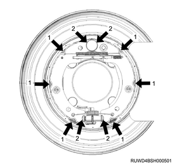
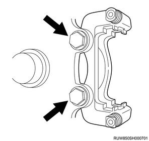
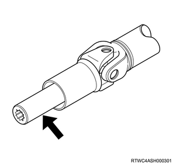
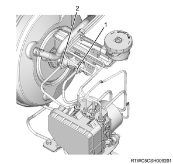
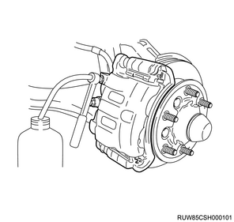

Rear axle assembly installation (All models)
1. Rear axle assembly installation
1. Install the shock absorber to the rear axle.
Tightening torque： 80 N・m { 8.2 kgf・m / 59 lb・ft }

2. Coil spring installation
1. Install the coil spring to the rear axle.
Note
- Install with the lower end of the coil spring against the radius curve of the of the rear axle as shown in the following diagram.
Caution
- Install so the coil spring does not ride up past the radius curve of the rear axle.

- Left side
- Right side
- Lower end of the coil spring and radius curve of the rear axle
2. Install the coil spring insulator to the coil spring.
3. Raise the rear axle using the jack.
4. Install the washer to the frame.
Note
- Install the center washer.
- Frame
- Center washer
- Shock absorber
5. Connect the shock absorber to the frame.
Tightening torque： 20 N・m { 2.0 kgf・m / 15 lb・ft }

6. Inspect the coil spring.
Note
- Inspect whether the lower end of the coil spring is riding up past the radius curve of the rear axle.
- Inspect whether the distance between the lower end of the coil spring and the radius curve of the rear axle is has exceeded the specified value.
Standard： 17.5 mm { 0.69 in }
3. Lateral rod installation
1. Temporarily tighten the lateral rod to the rear axle.
2. Temporarily tighten the lateral rod to the frame.

- Lateral rod
3. Securely tighten the lateral rod to the rear axle.
Tightening torque： 80 N・m { 8.2 kgf・m / 59 lb・ft }
4. Securely tighten the lateral rod to the frame.
Tightening torque： 165 N・m { 16.8 kgf・m / 122 lb・ft }
4. Stabilizer bar installation
1. Install the stabilizer link to the stabilizer bar.
Tightening torque： 97 N・m { 9.9 kgf・m / 72 lb・ft }
2. Install the bushing to the stabilizer bar.
3. Install the stabilizer bar to the rear axle.
Note
- Install the clamp to the stabilizer bar, and then install the stabilizer bar to the rear axle.
Tightening torque： 25 N・m { 2.5 kgf・m / 18 lb・ft }
4. Connect the stabilizer link to the frame.
Tightening torque： 97 N・m { 9.9 kgf・m / 72 lb・ft }

- Stabilizer link
- Nut, stabilizer link - frame
5. Upper link installation
1. Temporarily tighten the upper link to the frame.
Note
- Face the identification mark on the upper link toward the outside rear end of the vehicle and install as shown in the following diagram.
- The diagram below shows the right side of the vehicle. The left side is opposite.
- Identification mark
2. Temporarily tighten the upper link to the rear axle.
3. Securely tighten the upper link to the frame.
Tightening torque： 165 N・m { 16.8 kgf・m / 122 lb・ft }
4. Securely tighten the upper link to the rear axle.
Tightening torque： 165 N・m { 16.8 kgf・m / 122 lb・ft }
5. Connect the harness to the upper link.
6. Lower link installation
1. Temporarily tighten the lower link to the frame.
Note
- Face the identification mark on the lower link toward the downward rear end of the vehicle and install as shown in the following diagram.
- The diagram below shows the right side of the vehicle. The left side is opposite.

- Identification mark
2. Temporarily tighten the lower link to the rear axle.
3. Securely tighten the lower link to the frame.
Tightening torque： 165 N・m { 16.8 kgf・m / 122 lb・ft }
4. Securely tighten the lower link to the rear axle.
Tightening torque： 165 N・m { 16.8 kgf・m / 122 lb・ft }
5. Connect the parking brake cable bracket to the lower link.
7. Parking brake cable installation
1. Install the parking brake cable to the back plate.
Note
- Place the inner cable into the hole of the back plate, install the outer cable case and cap to the backplate, and then tighten the nuts.
Tightening torque： 10 N・m { 1.0 kgf・m / 89 lb・in }

2. Install the parking brake cable to the bracket.
Note
- Install the parking brake cable to the lower link.
Tightening torque： 10 N・m { 1.0 kgf・m / 89 lb・in } Nut
3. Install the parking brake cable bracket to the frame.
Tightening torque： 6.5 N・m { 0.7 kgf・m / 58 lb・in } Bolt
8. Brake shoe assembly installation
1. Install the shoe holding cup to the brake shoe pin.
2. Install the shoe holding spring to the brake shoe pin.
3. Install the brake shoe assembly to the support plate.
Note
- Apply SOLVEST 113 grease to the brake shoe fittings and sliding section of the back plate.

- Back plate sliding section
- Fitting section
Note
- Secure the brake shoe with the shoe holder pin.

- Shoe holding spring
- Shoe holding cup
- Brake shoe pin
Caution
- Securely assemble the shoe holding spring and shoe holder pin.
- Install with the shoe holder pin groove facing sideways.
- Use a new shoe holder pin and spring.
- Be careful not to damage the dust cover
4. Install the adjuster to the brake shoe.
Caution
- Pay attention to the mounting direction of the adjuster.
5. Install the strut to the brake shoe.
6. Connect the parking brake cable to the lever.
7. Install the adjuster spring to the brake shoe.
8. Install the return spring to the brake shoe.
9. Rear wheel speed sensor preparation
Note
- Check the wheel speed sensor before installation.
- Before installing the sensor, clean the inside of the sensor installation hole and installation surface of the sensor bracket, and the installation surface of the sensor bracket for the knuckle and confirm that there is no foreign material such as rust and pieces of the sensor.
- Remove any foreign material such as pieces of the sensor from the inside of the mounting hole or the installation surface.
- Remove any rust on it with wire brush or the like.
Caution
- When rust penetrant is used to remove the wheel speed sensor, clean up the part with part cleaner or the like.
10. Rear wheel speed sensor safety information
Caution
- When installing the sensor, use your hand to push the sensor installation flange until it is firmly attached to the installation surface, and then tighten the bolt.
- When inserting the sensor, do not pry or strike it with a tool.
- Do not tighten the fixing bolts for the sensor body with an air tool, but temporarily tighten by hand and then fully tighten them.
- After tightening the bolts, confirm that there is no gap between the installation flange and the installation surface again.
- Install the sensor harness using the twist prevention line as a reference to avoid twisting.
- Be careful not to pull the harness forcibly, which may result in disconnection.
- Confirm that there is no harness interference.
11. Rear wheel speed sensor installation
1. Install the wheel speed sensor to the rear axle case.
Tightening torque： 8 N・m { 0.8 kgf・m / 71 lb・in }

2. Connect the harness clip to the harness.
Note
- Install the harness fixing bolt, and tighten it to the specified torque.
Tightening torque： 8 N・m { 0.8 kgf・m / 71 lb・in }
12. Rear wheel speed sensor connect
1. Connect the harness connector to the wheel speed sensor.
13. Rear rotor installation
1. Install the rear rotor to the axle shaft.
14. Brake support installation
Note
- Apply NIGLUBE RX-2 rubber grease or equivalent to the boot and guide pin as shown in the diagram.
- Apply NIGLUBE RX-2 rubber grease or equivalent to the inside of the boot.
Caution
- Do not use mineral grease.
1. Install the boot to the brake support.
Note
- Install firmly to the brake support groove.

2. Install the guide pin to the brake caliper assembly.
Note
- Install the guide pin boot firmly to the guide pin groove.

3. Inspect the boot.
Note
- Slightly pull out the guide pin to confirm that the boot is securely installed to the cylinder body groove.
- Move the guide pin to spread the rubber grease over the brake support groove.
Caution
- Do not mix-up the top and bottom of the guide pin.

4. Install the brake support to the rear axle.
Tightening torque： 120 N・m { 12.2 kgf・m / 89 lb・ft }

15. Disc brake pad installation
1. Install the disc brake pad to the brake support.
Note
- After installing the clip, install the pad assembly with attached shim.
- Install new parts as necessary.
16. Brake caliper assembly installation
1. Install the brake caliper assembly to the brake support.
2. Install the lock bolt to the brake caliper assembly.
Tightening torque： 32 to 42 N・m { 3.3 to 4.3 kgf・m / 24 to 31 lb・ft }

17. Brake hose connect
1. Install the brake hose to the brake caliper assembly.
Note
- Install the bolts and a new gasket.
Tightening torque： 29 to 39 N・m { 3.0 to 4.0 kgf・m / 21 to 29 lb・ft }

- Gasket
Note
- After installing, bleed the air.
Caution
- Use a new gasket.
- Insert the brake hose end into the detent hole.
- Before installing, completely remove any dust or foreign materials from the bolts and screws on both the brake side and sealing side surfaces.
18. Rear propeller shaft assembly safety information
Caution
- When removing the propeller shaft from the transmission, cover the slip yoke with a cloth to protect the oil seal contact surface from damage.
- Pay attention to prevent damage to the oil seal contact surface of the slip yoke during installation.
- Completely remove dust and foreign objects on the flange coupling mounting surfaces of the propeller shaft and final drive.

19. Rear propeller shaft assembly installation
1. Install the rear propeller shaft assembly to the transmission.
2. Install the rear propeller shaft assembly to the flange.
Note
- Align the alignment marks of each joint made during removal, and then tighten the bolt to the specified torque.
Tightening torque： 59 N・m { 6.0 kgf・m / 44 lb・ft }
20. Center bearing assembly installation
Note
- The following is the 2WD model.
1. Install the center bearing assembly to the frame.
Note
- Install the center bearing and tighten the bolt to the specified torque.
Tightening torque： 69 N・m { 7.0 kgf・m / 51 lb・ft }
21. Rear axle differential oil filling
1. Replenish the rear axle case with the rear axle differential oil.
Note
- Install a new gasket to the drain plug and install to the axle case.
Tightening torque： 78 N・m { 8.0 kgf・m / 58 lb・ft }
Note
- Pour in the specified amount of differential oil GL5.
Capacity： 2.2 L { 0.58 US gal / 0.48 Imp.gal } Ring gear size 220mm {8.66in}
Note
- Install a new gasket to the filler plug and install to the axle case.
Tightening torque： 78 N・m { 8.0 kgf・m / 58 lb・ft }
Note
- The following applies to limited slip differential models.
- Pour in the specified amount of differential oil GL5LSD.
Capacity： 2.2 L { 0.58 US gal / 0.48 Imp.gal }
22. Brake fluid air bleed
Note
- Filling up the reservoir tank
Caution
- Use only the specified brake fluid.
- Do not use any brake fluid that contains petroleum components.
Note
- Doing so may cause expansion or distortion of the rubber parts in the hydraulic brake system.
Caution
- Do not use any brake fluid container that contains petroleum components or that is wet with water.
Note
- If water mixes in the brake fluid, its boiling point decreases.
- Put a cover on every container to prevent contaminations.
Caution
- Refill the fluid in the reservoir tank when the engine is cold.
- Be careful never to spill the brake fluid on painted surfaces because the fluid will damage the paint.
- Refill the fluid in the reservoir tank to the MAX mark to prevent air from mixing in.
- Be careful for the fluid not to overflow.
- Clean the reservoir tank before removing the cap to prevent dirt, etc. from entering the tank.
Note
- Refill the brake fluid to the MAX mark of the reservoir tank as necessary.
- Use the brake fluid DOT3.
- Brake fluid leakage
- With the engine idling, set the shift lever to neutral, and continue depressing the brake pedal with a constant amount of pressure.
- If the pedal stroke gradually increases, there may be fluid leakage in the oil pressure system.
- Visually check for oil leakage.
- Air removal from the oil pressure system
- Air entering the brake pipe will cause an insufficient brake operation.
- In the case of using the brake in a condition where the fluid level in the reservoir tank is extremely low, or removing the brake pipe, conduct air removal.
- The air removal work requires cooperation between 2 operators.
- Be sure to engage the parking brake during the air removal work.
Caution
- Conduct the air removal work with the engine started to protect damage to the push rod seal, and secure adequate ventilation.
- Maintain the fluid in the reservoir tank at the specified level before starting the air removal work.
- When bleeding air, start with the rear wheel cylinder or rear caliper furthest from the master cylinder.
Note
- The air removal work is necessary to remove the air when the air enters the oil pressure system.
- In a condition where the brake fluid level has dropped or when the air entered the fluid after removing the brake pipe from the master cylinder, air removal may be needed for all brakes at 4 locations.
- When brake pipes have been removed from any one brake, air bleeding must be performed for that wheel cylinder or caliper.
- When the piping between the master cylinder and one of the brakes is removed, air removal is needed for the brake system operating with the removed pipe.
1. Apply the parking brake.
Note
- Pull the parking brake lever to a full extent.
2. Start the engine.
Caution
- Be careful not to conduct the air removal work with the engine stopped. Doing so will damage the vacuum booster.
3. Remove the cap from the reservoir tank.
4. Replenish the reservoir tank with the brake fluid.
Note
- The brake fluid tank is shared with the clutch fluid tank.
- As the amount of the fluid is different between the brake compartment and clutch compartment depending on the partition inside the tank, check the amount of brake fluid in the brake compartment.
Caution
- During the air removal work, keep filling the reservoir tank at least half full with the fluid.
- Be sure to refill new brake fluid.
- When refilling the fluid, be careful for the air not to enter the fluid.

- MAX level
- MIN level
- Brake fluid compartment
Note
- When removing, installing, or replacing the master cylinder, first drain the air from the master cylinder and then from each wheel cylinder and caliper in accordance with the following procedures.
- Air removal from the brake master cylinder
5. Disconnect the brake pipe from the brake master cylinder.

- Rear brake pipe
- Front brake pipe
Note
- Remove the rear brake pipe.
- Inspect the fluid level and refill the fluid as necessary.
- If the fluid is refilled, leave the system as it is for at least 1 minute.
6. Operate the brake pedal.
Note
- Slowly depress the brake pedal once and hold it down.
- Use a finger to completely plug the outlet of the master cylinder that is removed from the brake pipe, and slowly release the brake pedal.
- Remove the finger from the outlet after the brake pedal has been completely returned.
- Repeat the process mentioned above until the brake fluid comes out overflowing from the outlet.
Caution
- Be careful that the fluid level in the reservoir tank does not drop below the intermediate level indication.
7. Connect the brake pipe to the brake master cylinder.
Note
- Connect the rear brake pipe.
- Slowly depress the brake pedal once and hold it down.
- Loosen the rear brake pipe.
- Tighten the brake pipe again and slowly return the brake pedal.
- Repeat steps 5 to 7 mentioned above until air does not come out form the outlet when the brake pipe is loosened.
Caution
- Be careful never to spill the brake fluid on painted surfaces because the fluid will damage the paint.
Note
- Repeat steps 5 to 7 to remove air from the front brake pipe.
- Rear brake pipe
- Front brake pipe
Note
- Air removal from the wheel cylinder or caliper
8. Drain air from the brake caliper assembly.
Note
- Remove air from each wheel in the following order.
- Right rear caliper or right rear wheel cylinder
- Left rear caliper or left rear wheel cylinder
- Left front caliper
- Right front caliper
- If the brake fluid does not come out, it shows that air has entered the master cylinder.
- In this case, follow steps 5 to 7 to remove air from the master cylinder.
- Apply an appropriate wrench to the bleeder screw.
9. Connect the tube to the bleeder screw.
Note
- Connect a transparent tube to the bleeder screw and put the other end of the tube into a transparent container containing the brake fluid.

10. Operate the brake pedal.
Note
- Slowly depress the brake pedal 3 times with a speed of once per second and hold it down.

- Brake pedal
Note
- Loosen the bleeder screw until the brake fluid flows in the tube.
- Tighten the bleeder screw.
- Slowly return the brake pedal.
- Repeat steps 9 and 10 until air is completely removed.
- Repeat the air removal procedures at least 10 times for the front wheel and at least 15 times for the rear wheel.
Caution
- After air removal of each wheel, be sure to confirm the fluid level in the reservoir tank.
Note
- When air removal of all wheels is completed, depress the brake pedal and check for a feeling of stepping on a sponge.
- If the feeling of stepping on a sponge exists, the air removal procedures need to be repeated.
11. Replenish the reservoir tank with the brake fluid.
Note
- Refill the fluid to the MAX mark as necessary.
12. Install the cap to the reservoir tank.
13. Stop the engine.
Note
- Brake pipe and brake hose
- Inspect all pipes and hoses for worn, bent, damage, cracks, or dents.
- If any abnormality is found, conduct a necessary repair or replacement.
Caution
- Pay attention to all joint sections of pipes and hoses, which are vulnerable to damage.
- Be careful not to extremely twist or bend the hose during work, and not to damage the brake pipe when repairing or replacing the axles, suspensions, etc.
Note
- Conduct leakage inspections with the brake pedal fully depressed.
Caution
- If leakage is found around the joint section, conduct re-tightening or replacement.
- Be sure to implement these procedures when installing the brake pipe.
- After removing the pipe and hose, cover the opening with a plug or tape to prevent foreign objects from entering.
23. Disc wheel installation
1. Install the disc wheel to vehicle.
Note
- Install the wheel nuts in the numbered order.
Tightening torque: 120 N⋅m {12.0 kgf⋅m/87 lb⋅ft}

24. Parking brake lever assembly adjustment
1. Adjust the parking brake.
Note
- Remove the adjust cover, and turn the adjuster until the rear disc rotor no longer rotates.
- Turn the parking brake drum so it faces downward.
- Turn back the adjuster by the specified number of notches.
- Number of notches to turn back the adjuster: 8 notches
2. Adjust the parking brake lever.
Note
- Turn to adjust the adjust nut so that the parking brake lever is pulled up 6 to 9 notches when the lever is pulled up with a force of 294 N {30 kg/66 lb}.
Caution
- Take care not to allow brake drag.

- Adjust bolt
- Adjust nut
- Spacer
- Parking brake cable
Note
- Remove the ashtray and adjust.

- Ashtray
25. Rear wheel speed sensor inspection
Note
- Check the following after installation of the wheel speed sensor.
- Turn the ignition switch ON, and confirm that the ABS warning light turns off after it illuminates for approximately 3 seconds.
- Start the engine and drive the vehicle straight forward from the stopped state. Slowly accelerate to 15 km/h (9 mph) and then slowly apply the brake until the vehicle stops. Confirm that no abnormal noise or problem in braking force during this procedure.
- Confirm whether the following symptom occurs during verification actions above.
- The ABS warning light turns on, or does not turn off.
- ABS operation noise or motor rotation noise is caused.
- Brake pedal kickbacks are felt.
- The target braking force is not produced.
- When the above symptom occurs, take the following action.
- Check the installation status of the wheel speed sensor and connection status of the connector.
- Check the DTCs, and perform inspection and take remedies for the ABS system in accordance with the diagnostic procedure for each DTC.
Caution
- Since the ABS rotates the motor for a moment right immediately after the vehicle is started, sound of rotating motor may be heard.
- This is the operation for initial check task and not at fault.